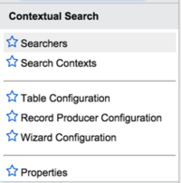

Contextual Search
| |
Note: This article applies to Fuji. For more current information, see Contextual Search Displays Matching Knowledge Results at http://docs.servicenow.com
The ServiceNow Wiki is no longer being updated. Please refer to http://docs.servicenow.com for the latest product documentation. |
1 Overview
Contextual search allows you to configure fields on forms and record producers to automatically display knowledge search results based on the text entered in those fields. This helps users deflect or quickly resolve their issues without involving the service desk operators. Contextual search can also include results from other sources such as a service catalog, allowing a user to directly order a catalog item from a search.
Contextual searches are enabled for incidents by default, providing incident deflection using knowledge. This default implementation includes contextual search results for forms, record producers, email notifications, and wizards.
To define a contextual search, first define a search context to set parameters, then define where the contextual search results are to appear: in forms, record producers, and wizards.
You must have the admin role to define contextual searches and to administer contextual search functions and properties.
Contextual search is available starting with the Fuji release.
2 Video Tutorial
The following video tutorial demonstrates how contextual search can deflect incidents and promote incident resolution through self-service. It explains how the various components of the Contextual Search application work within the incident deflection and resolution context. This applies to ServiceNow instances starting with the Fuji release.
| Getting Started With Contextual Search |
|---|
3 Roles
| Role title [Name] | Description |
|---|---|
| Administrator [admin] | Access and use contextual search functions. |
4 Menus and Modules
To access contextual search features, use these modules under the Contextual Search menu.
|  |
|
{kind=link}